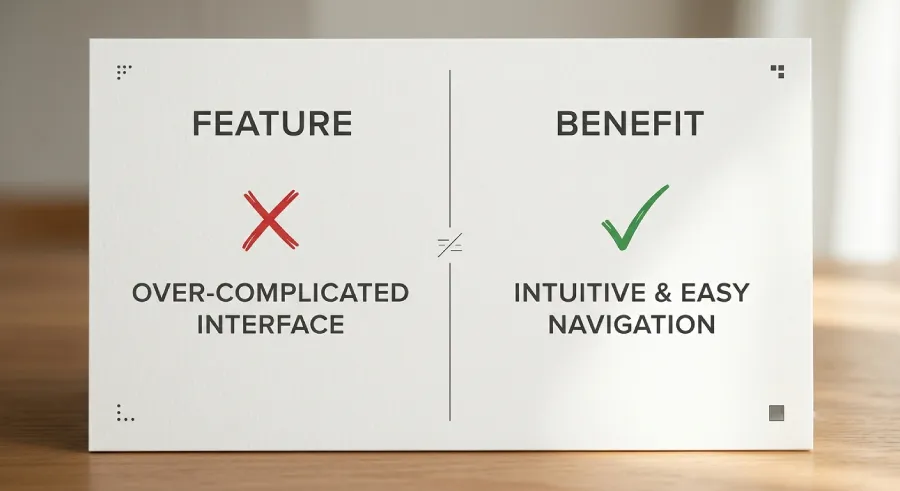

Nobody wakes up in the morning thinking, "I want to find an attorney" or "I want to find a personal trainer." They wake up thinking about the problem. A difficult situation that needs resolving. A body that doesn't feel right. A house that needs to sell. A villa to find for a vacation.
You're the vehicle. Their problem is the destination. And if your website talks about you first instead of them, you lose the connection before you ever get the chance to build it.
The Most Common Mistake in the Message
Open most independent professionals' websites and you'll see the same pattern. "I'm so-and-so, with this many years of experience, specializing in this, believing in these values." All of that talks about the professional. Almost none of it talks about the person actually looking at the page.
It's not that this information has no value. It does, later. In the first encounter, the visitor isn't looking for a resume. They're looking for an answer to a silent question: "Does this person understand what I'm going through, and can they actually help me?"
If the page doesn't answer that within the first few seconds, it doesn't matter how impressive the resume is further down.
Features vs. Benefits
There's a fundamental distinction that changes how a website gets written entirely. A feature is what you do. A benefit is what the other person gets out of it.
An attorney who writes "15 years of experience in family law" is describing a feature. The same attorney writing "you'll get through this process without feeling like you're facing it alone" is speaking to a benefit. And the second one is what actually matters to someone reaching out for help during a difficult moment.
That doesn't mean credentials have no place. They do, and an important one, because they build trust. But order matters. First you show that you understand the problem. Then you prove you're capable of solving it.

What Client-Focused Copy Actually Sounds Like
The shift isn't always dramatic. Often it's simply a matter of perspective within the same sentence.
Instead of "I offer personalized fitness programs," something closer to "you'll see real change in your body without having to guess what's actually working." Instead of "I specialize in local real estate," something closer to "you'll find the home that fits your life, without spending months searching alone." The difference isn't how clever the phrasing is. It's who sits at the center of the sentence, you, or them.
This Holds True Across Every Field
This isn't a marketing trick that only works in certain industries. It applies anywhere someone is searching for a professional to help with something personal.
A villa owner isn't selling square footage, they're selling the vacation someone is dreaming about. A personal trainer isn't selling workout plans, they're selling how someone will feel in their body three months from now. An attorney isn't selling legal knowledge, they're selling the peace of mind that someone else is handling something difficult on your behalf. In every case, the real product isn't the service. It's the outcome the person feels at the end.
How to Apply This to Your Own Website
You don't need to rewrite everything. You need to run every core sentence through one question: does this sentence talk about me, or does it talk about what the other person gets?
Start with the headline on your first screen, since it carries the most weight. If it states what you are instead of what the visitor gains, change that one first. Then move through the subheadings of each section. And keep the credentials, experience, and certifications exactly where they belong, as proof after the message, not as the message itself.
The Bottom Line
Nobody falls for a service. People fall for the solution they're hoping to find, and who provides it is a second thought. If your website talks about the visitor and their problem first, you automatically become the leading candidate to solve it. If it talks about you first, you stay one more name on a list.
Want your website's message to speak your client's language instead of your own?
At Evida Studio, we write copy that starts with your client's problem, not your resume.
Let's Talk About Your Project